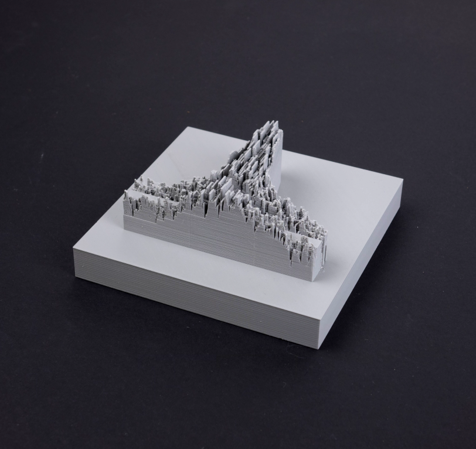
Es war ein frostiger Januar im Jahr 1998, als eine gewöhnliche Fichte zu einer aussergewöhnlichen wurde. Wissenschaftler:innen der Eidgenössischen Forschungsanstalt für Wald, Schnee und Landschaft (WSL) befestigten ein Dendrometer, ein Messgerät für das Baumwachstum, an einer Fichte im Davoser Versuchswald. Täglich, alle zehn Minuten werden Daten gemessen und in einer riesigen Datenbank gesammelt. Mit Hilfe dieser Daten ist es möglich, das Wachstum von «Tree 1» mit der herrschenden Temperatur, dem Wasserstress, der Luftfeuchtigkeit oder anderen Faktoren in Beziehung zu setzen. Durch die Visualisierung im 3D-Raum und anschliessendem 3D Druck, wurden diese Daten erlebbar gemacht. Es entstanden zwei einzigartige Datenskulpturen die das Baumwachstum über 20 Jahre darstellen.

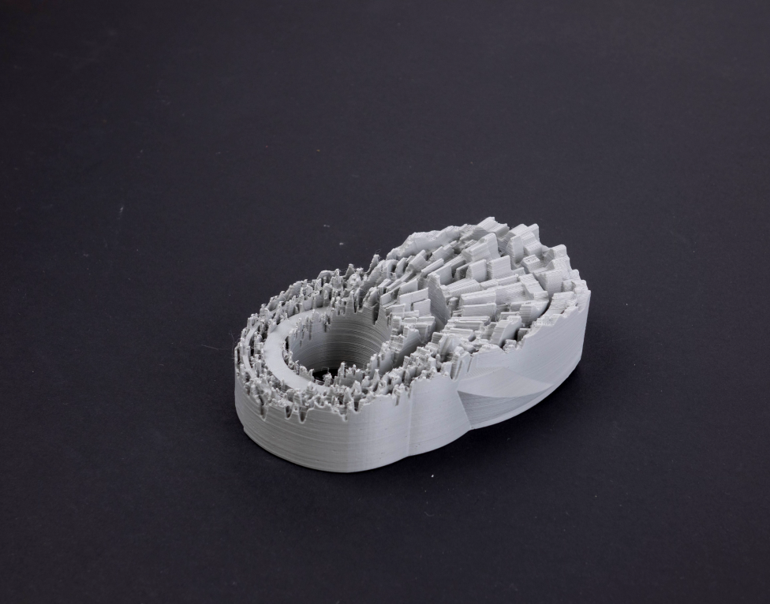
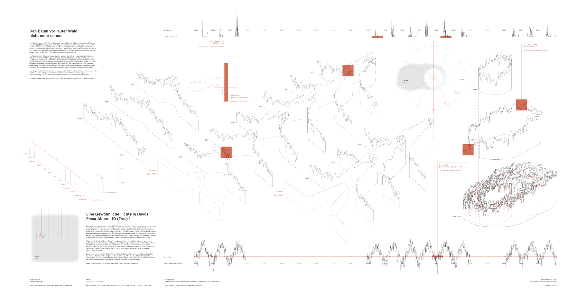
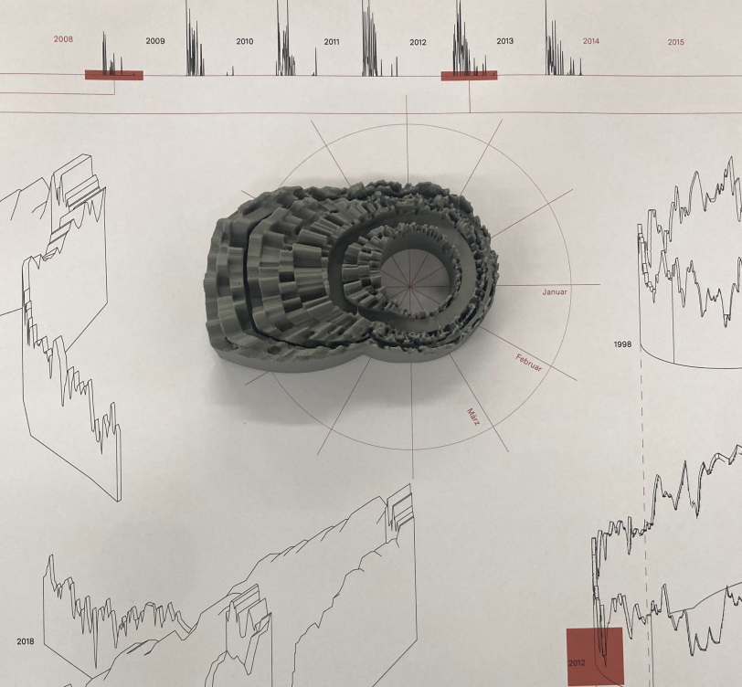
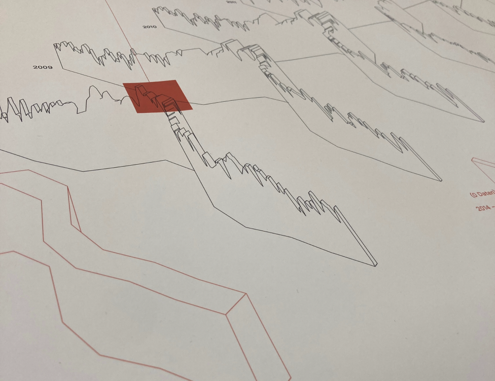
Unser Konzept spielt mit der Metapher “Wenn das Fass überläuft”. So wollten wir Personen als Gefässe darstellen die durch den Einfluss von Stress überlaufen können. Anfangs sollten die Gefässe auf 3 Dimensionale Zylinder projeziert werden. Es gab dabei aber Probleme mit Verzerrungen und es war auch kaum möglich den Deckel des Gefässes, realitisch darzustellen. So haben wir uns nach einigen Tests auf eine 2D Projektion auf Leinwände entschieden.
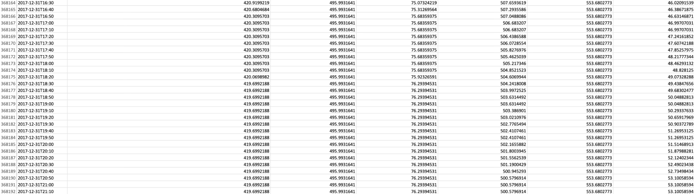
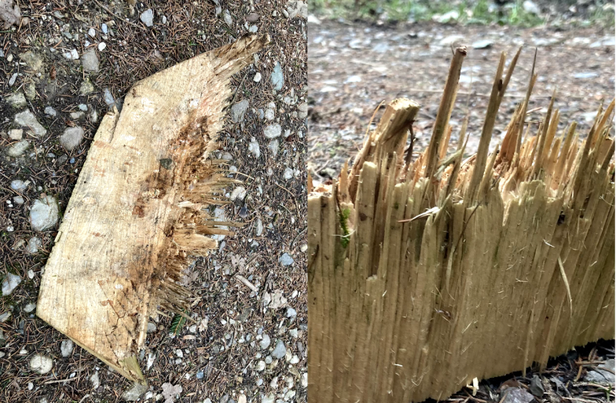
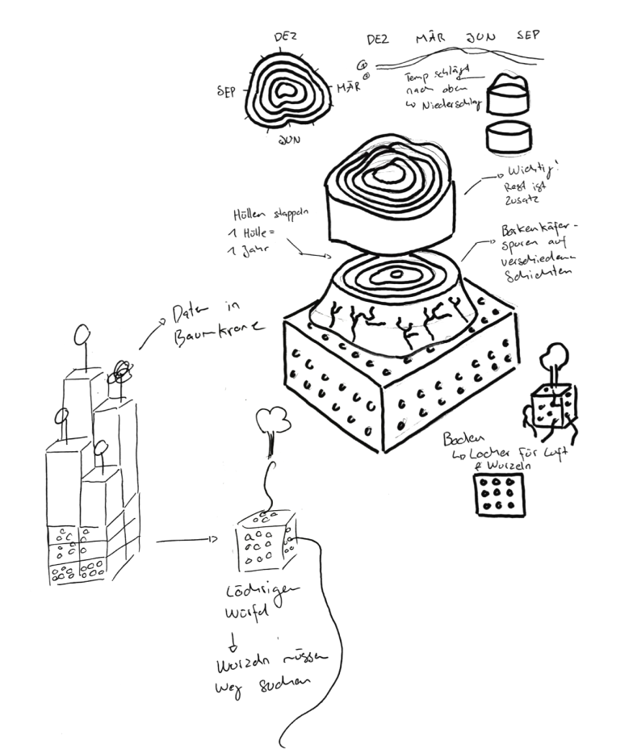
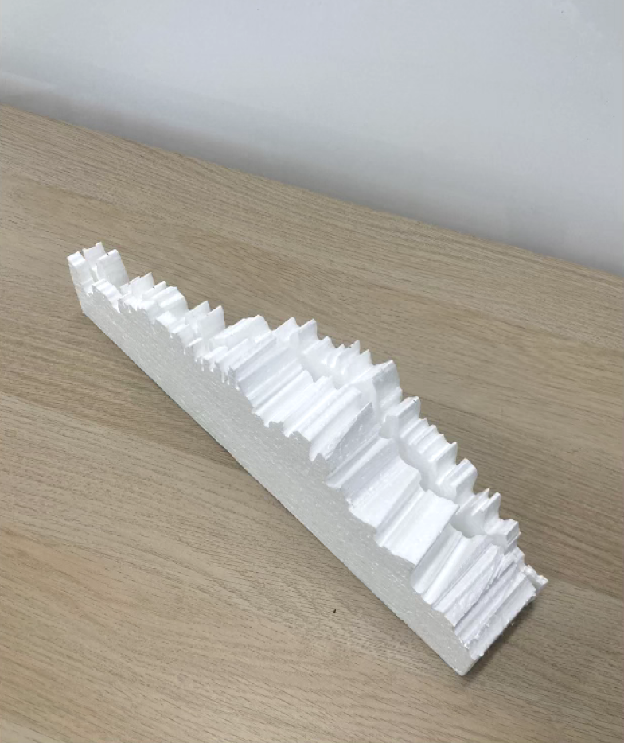
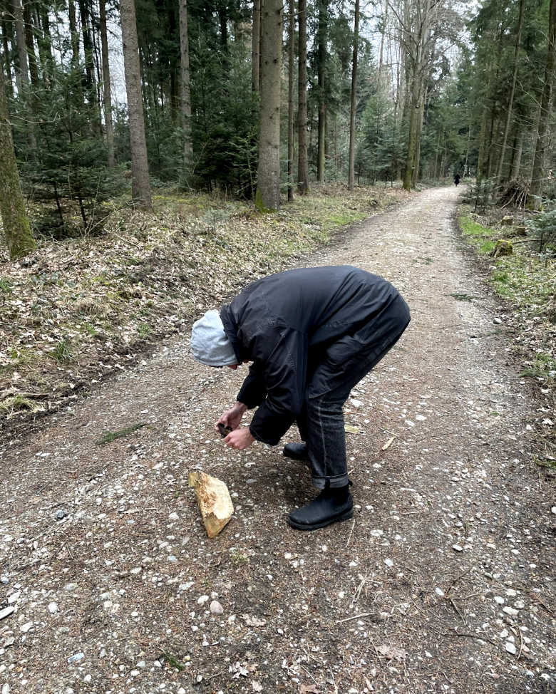
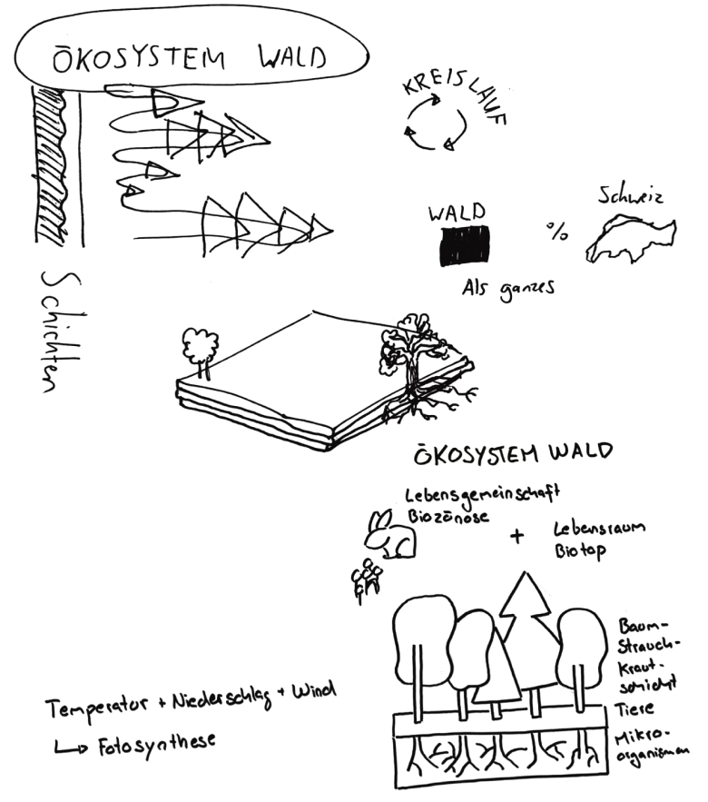
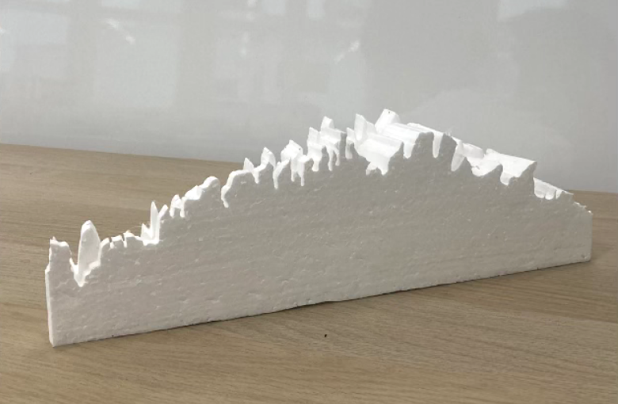
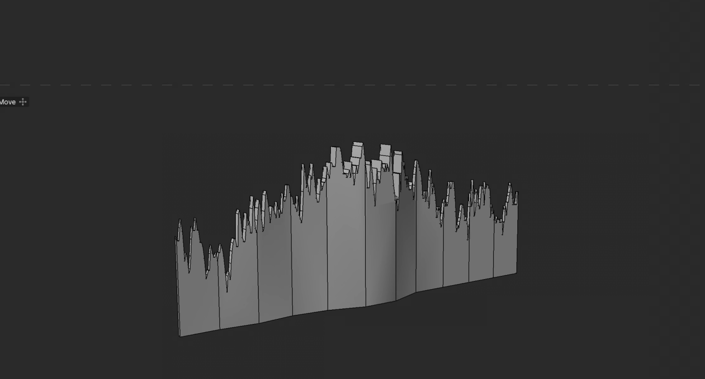
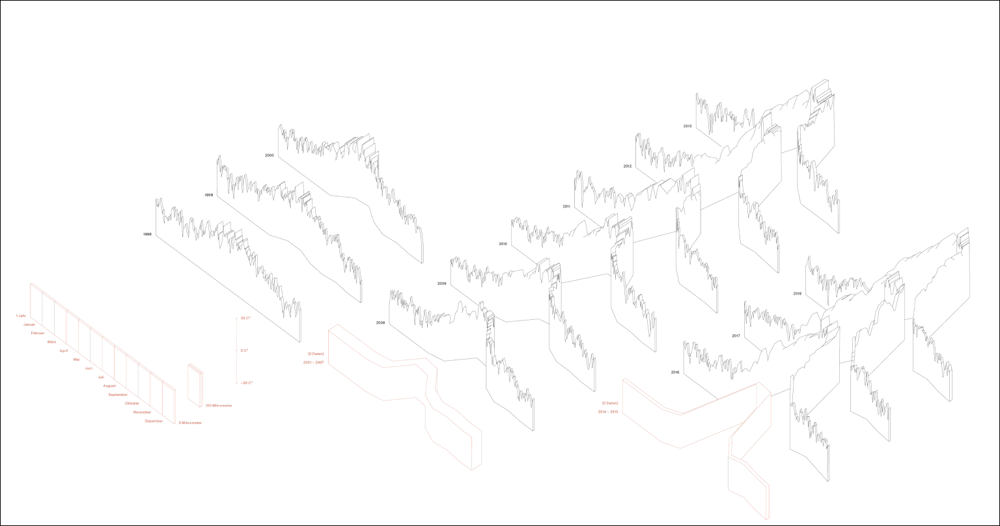